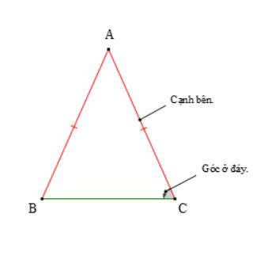
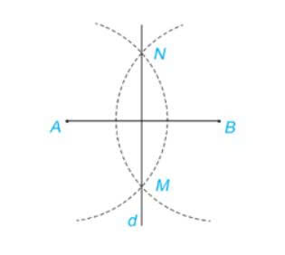

• Định nghĩa: Tam giác cân là tam giác có hai cạnh bằng nhau.
• Tính chất:
+ Trong tam giác cân, hai góc ở đáy bằng nhau.
+ Tam giác có hai góc ở đáy bằng nhau thì tam giác đó là tam giác cân.

• Tam giác đều là tam giác có ba cạnh bằng nhau. Khi đó ba góc cũng bằng nhau và bằng 60°.
• Một tam giác có ba cạnh hoặc ba góc bằng nhau thì tam giác ấy là tam giác đều.
• Tam giác cân có một góc bằng 60° thì tam giác ấy là tam giác đều.
• Định nghĩa: Đường thẳng vuông góc với đoạn thẳng tại trung điểm của nó được gọi là đường trung trực của đoạn thẳng đó.
• Đường trung trực của đoạn thẳng cũng là trục đối xứng của đoạn thẳng đó.
• Tính chất: Điểm nằm trên đường trung trực của một đoạn thẳng thì cách đều hai mút của đoạn thẳng đó.
• Đường trung trực của đoạn thẳng là tập hợp tất cả các điểm cách đều hai mút của đoạn thẳng đó.
• Cách vẽ đường trung trực của đoạn thẳng bằng compa và thước thẳng.
Chẳng hạn: Vẽ đường thẳng d là đường trung trực của đoạn thẳng AB như sau:
+ Vẽ đoạn thẳng AB.
+ Lấy A làm tâm, vẽ cung tròn có bán kính lớn hơn AB/2. Sau đó lấy B làm tâm, vẽ cung tròn cùng bán kính sao cho hai cung này cắt nhau tại hai điểm M và N.
+ Dùng thước thẳng vẽ đường thẳng đi qua M và N. Đường thẳng đó là đường trung trực của đoạn thẳng AB.
